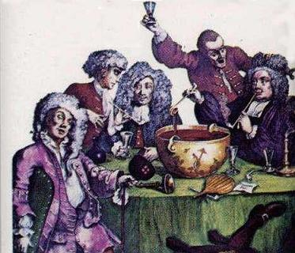

1° Come, Fill your Bowl!
1°Que tous emplissent leur coupe!
Celebration of the birthday of the Chevalier de Saint George
Chant pour l'anniversaire du Chevalier de Saint-Georges
Followed by another song to the same tune
Tune - Mélodie"When the King enjoys his own again"
from Hogg's "Jacobite Reliques" Vol.1, N°29, 1819

|
Same tune as
"When the King enjoys his own again"
by M. Parker (1643).
See also To your arms |
Même mélodie que
"Si le roi reprend sa charge"
de M. Parker (1643).
Cf. aussi Aux armes, Montagnards! |

|
COME, FILL YOUR BOWLS
1. Come, fill your bowls, come, fill them high, While these are here we'll scorn to fly ; Shall honest Tories fear disgrace, When loyalty glows in the face ? Great laurels have been won On the glorious tenth of June, By the force of Burgundy and Champagne : While bumpers go in rounds, There's nought but blood and wounds, And the king shall enjoy his own again. 2. Were our glasses but turn'd into swords, Or our actions half as great as our words ; Were our enemies turn'd into quarts, How nobly we should play our parts ! The least that we would do, Each man should kill his two, Without the help of France or Spain ; The Whigs should run a tilt, And their damn'd blood be spilt, And the king should enjoy his own again. Source: "The Jacobite Relics of Scotland, being the Songs, Airs and Legends of the Adherents to the House of Stuart" collected by James Hogg, published in Edinburgh by William Blackwood in 1819. |
VIENS EMPLIR TA COUPE
1. Que tous emplissent leur coupe à ras bord Qu'avant la fin nul ne parte. Un Tory ne craint pas le mauvais sort: Un visage franc l'écarte. Des lauriers sans fin En ce glorieux dix juin Nous valent bourgogne et champagne. Buvons à la ronde, La plaie qui saigne est la bonde. Le roi son trône regagne! 2. Si ces gobelets étaient des épées Et nos paroles des actes, Nous ne ferions des Whigs qu'une bouchée: Ruinant leur château de cartes! Le moins courageux Tuerait pas moins de deux Whigs, seul, sans l'aide de l'Espagne! Les Whigs dispersés Et leur maudit sang versé, Le roi son trône regagne! (Trad. Christian Souchon(c)2010) |
|
Bacchanalian songs
"Is rather a clever song, to an old favourite tune. It is manifestly one of those composed for, and sung at, the celebration of the anniversary of the birth-day of the Chevalier de St George. " (Hogg in "Jacobite Relics). Several Jacobite songs take on the form of drinking songs : The Twenty-ninth of May Over the Seas and far Away The Three Healths Come let us drink a Health, Boys Here is to the King, Sir Here's a Health in Water Here's a Health to the valiant Swede Here's a Health to them that's awa! Tha tigh'n fodham eiridh Oran nam Fineachan Gaidhealach Robin John Clark Come, let us be jovial True Blue Let Misers tremble o'er their Wealth Whigs' Glory A Toast Deoch-slàinte Theàrlaich The present song is emblematic for the whole genre as it contains all quasi-mystic features that are only partly found in the others, namely: - exhortation to fill glasses to the brim: ('"Your glasses charge high!...") - designation of the person honoured, sometimes in a cryptic way: ("'Tis in Great Charles' praise", "Ye ken wha I mean, sir...") - admission to the feast restricted to reliable members of the brotherhood : ("But if within you fault is hidden, Soil not the holy cup!") - circulation of a "holy vessel" (the song "Over the seas and far away" prompts to "jointly pray") from which everyone takes a nip: ("Full gladly pass it round!") - assimilation of bacchanalian feats to feats of arms (" a dangerous, reckless band!") - vituperation of the group's opponents ("We'll pull down usurpation...") - exaltation of the champion ("James, our lawful king...") |
Chansons à boire
"Voici un chant assez spirituel, composé sur un vieil air connu. C'est manifestement l'un de ceux que l'on écrivait à l'occasion de l' anniversaire de la naissance du Chevalier de Saint-Georges. " (Hogg in "Jacobite Relics"). Plusieurs chants Jacobites revêtent la forme de chansons à boire : Le vingt-neuf mai Loin par delà l'océan Les trois toasts Portons un toast, mes enfants A la santé du roi! Le toast à l'eau A la santé du vaillant Suédois! A la santé des absents! Tha tigh'n fodham eiridh Oran nam Fineachan Gaidhealach Robin John Clark Venez, soyez de bonne humeur Fidèle loyauté Que les avares tremblent pour leur or La gloire des Whigs Un toast Deoch-slàinte Theàrlaich Le présent chant est comme l'archétype du genre, car on y trouve tous les éléments quasi-mystiques que les autres ne présentent qu'en partie, à savoir: - exhortation à remplir les verres à ras bord - désignation (de façon souvent voilée) de la personne que ces libations sont censées honorer. - exclusion de la beuverie de ceux qui ne partagent pas les convictions de la confrérie. ("Mais si votre coeur n'est pas pur, ne profanez pas la coupe sacrée!" - circulation du "vase sacré" (le chant "Par-delà l'océan" dit même "Amis, venez prier avec moi!") dans lequel tous les participants sont invités à boire. - assimilation des exploits bachiques à des faits d'armes. - vitupérations contre les adversaires du groupe. - exaltation de celui qui incarne ses espoirs. La langue anglaise souligne la filiation de ces pratiques avec les antiques religions à mystère, en l'occurrence le culte de Dionysos, en désignant ces chants par le terme de "bacchanalian" (bachique). |
2°Our King enjoys his own again
2° Le Roi siège à nouveau sur son trône
The Monmouth Rebellion
La rébellion de Monmouth
In the Note to Hogg's "Jacobite Relics" , Vol.1, N°30, 1819
| The following song which is to be found in a note to song N°30 in Hogg's collection, First series is also derived from "When the King enjoys his own again". | Le chant suivant se trouve dans la note explicative du chant N°30 dans la collection de Hogg, 1ère série. Il est dérivé de "Si le roi reprend sa charge". |
|
OUR
KING ENJOYs HIS OWN AGAIN
1. Whigs are now such precious things, We see there's not one to be found; All roar " God bless and save the king!" And his health goes briskly all day round. To the soldier, cap in hand, the sneaking rascals stand, And would put in for honest men ; But the king he well knows his friends from his foes, And now he enjoys his own again. 2. From this plot's first taking air, [1] Like lightning all the Whigs have run ; Nay, they've left their topping square, To march off with your eldest son : They've left their 'states and wives, to save their precious lives, Yet who can blame their flying, when 'Twas plain to them all, the great and the small, That the king would have his own again ? 3. This may chance a warning be, (If e'er the saints will warning take) To leave off hatching villany, Since they've seen their brother at the stake: And more must mounted be (which God grant we may see). Since juries now are honest men ; And the king lets them swing, with a hey ding a ding, Great James enjoys his own again. 4. Since they have voted that his guards A nuisance were, which now they find, Since they stand between the king And the treason that such dogs design'd; 'Tis they will you maul, though it cost them a fall, In spight of your most mighty men; For now they are alarm'd, and all loyalists well arm'd, Since the king enjoys his own again. 5. To the king, come, bumpers round, Let's drink, my boys, while life doth last: He that at the core's not sound Shall be kick'd out without a taste. We'll fear no disgrace, but look traitors in the face, Since we're case-harden'd honest men; Which makes their crew mad, but us loyal hearts full glad, That the king enjoys his own again. |
LE ROI SIEGE A NOUVEAU SUR SON TRONE
1. Les Whigs se sont faits bien rares, ma foi. En voir un n'est plus possible. Tous crient "Dieu bénisse et sauve le Roi!" L'épreuve n'est plus un crible. Devant le soldat qu'ils saluent chapeau bas, Chacun contrefait le saint homme. Mais le roi, qui sait, qui le soutient, qui le hait Siège à nouveau sur son trône. 2. Sitôt qu'on eut éventé ce complot, [1] Tous les Whigs ont pris la porte Il quitte son beau bercail, le troupeau, Et ton fils aîné l'escorte, Laissant femme et biens - sans la vie on n'a rien - Est-il quelqu'un qui s'en étonne? Le roi, et c'était facile à pronostiquer, Siège à nouveau sur son trône! 3. Ceci te serve d'avertissement (Si tant est qu'un saint y pense)! Whig, cesse tes lâches agissements! Vois ton frère à la potence! D'autres suivront: les jurés sont désormais Honnêtes. Que Dieu nous l'accorde! Sonne carillon de pendus, et ding, ding, dong! Grand Jacques, tire la corde! 4. Ses gardes, ils ont, d'un accord commun, Prescrit qu'on les élimine, S'interposant entre le souverain Et leur trahison insigne. Ils vont vous mâter, dût-il leur en coûter, Malgré le pouvoir de vos hommes. Ils sont vigilants, loyaux, bien armés, ces gens, Qui rendent au roi son trône. 5. Que nos verres à la santé du roi Jusque à notre mort résonnent! Celui dont le cœur n'est ni bon ni droit Qu'on l'éloigne sans vergogne! Nous ne craignons rien face à tous ces gredins. Endurcis, nous sommes honnêtes, Ce dont ils enragent, mais nous rend notre courage, C'est voir le roi sur le trône! (Trad. Christian Souchon(c)2010) |
| [1] Alludes to the Monmouth Rebellion . James Crofts (1649-1685), later Duke of Monmouth and Duke of Buccleuch, was an illegitimate son of Charles II. He was beheaded on Tower Hill on 15 July 1685 after an unsuccessful to overthrow James II. See "Willie the Wag" , a song inferring that Monmouth was in fact the victime of William of Orange's schemes and tricks. | [1] A trait à la rébellion de Monmouth . James Crofts (1649-1685), qui devint Duc de Monmouth et de Buccleuch, était un fils illégitime de Charles II. Il fut décapité à la Tour de Londres le 15 juillet 1685 après avoir échoué dans sa tentative de renverser Jacques II. Cf. "Guillot le faussaire" , un chant qui sous-entend que Monmouth avait été en réalité victime des manigances de Guillaume d'Orange. |
|
|
|